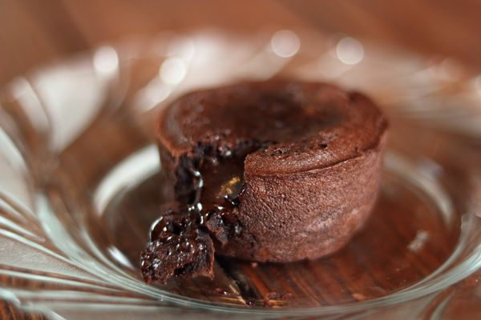

Recette du moelleux au chocolat
Ingrédients :
- 250 g de chocolat
- 175 g de beurre
- 125 g de sucre glace
- 75 g de farine
- 5 oeufs
Préparation :
- Faire fondre le chocolat.
- Ajouter le beurre en morceaux peu à peu et l'incorporer pour obtenir un crème bien lisse.
- Mettre la farine et le sucre glace dans un saladier. Ajouter les oeufs entiers et mélanger jusqu'à obtention d'une émulsion homogène.
- Verser le mélange chocolat-beurre sur cette préparation. Mélanger.
- Beurrer et fariner 6 moules individuels ou un grand moule.
- Verser la préparation et mettre à four chaud (200°C) - 10 min pour les petits gâteaux, 15 pour le grand.

Retour à l'accueil